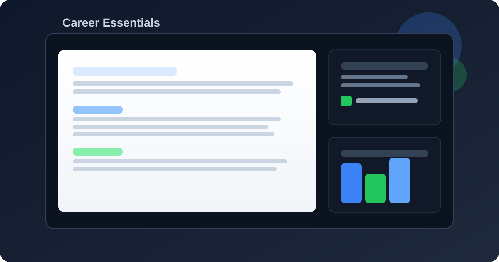
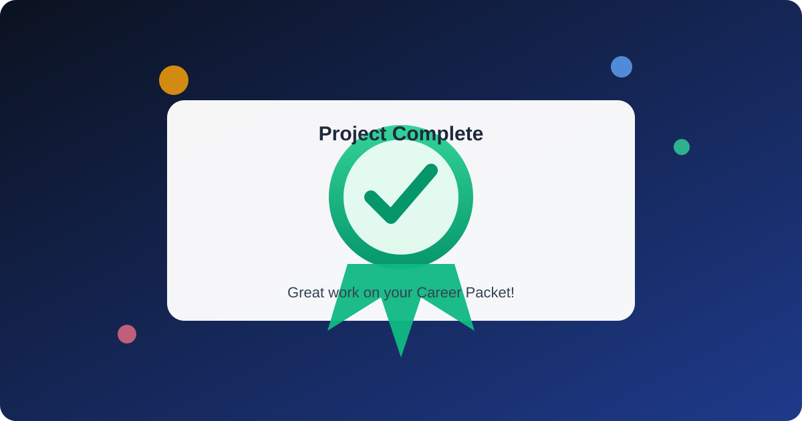

Progress: 0/5 pages completed
Project Scenario and Expectations
You are preparing a real-world job application packet for a position you are genuinely interested in.
Step 1: Choose and Save a Job Posting
- Find one entry-level first job posting you want to target.
- Copy/save the posting link and identify key skills, qualifications, and keywords.
- Record at least 5 exact keywords from the posting to reuse in your resume and cover letter when accurate.
- Use that posting to tailor your resume and cover letter in the next sections.
Time guide: Watch all 3 videos + complete quick checks (25–35 min), job posting selection + keyword extraction (10–15 min), resume draft (20–25 min), ATS revision (10–15 min), cover letter draft (15–20 min), final proofreading/export/submission checks (8–12 min).
Before You Click Next
- Record the exact job title.
- Record the company name.
- Save the job posting link so you can reference it while writing.
Keyword example: If the posting says “customer communication,” include that exact phrase where it truthfully matches your experience.
Project Expectations
- Create one polished 2-page packet: resume (page 1) and cover letter (page 2).
- Tailor both documents to your selected posting.
- Submit both `.docx` and `.pdf` versions of your final packet.
What to Submit
- One final Word file: Lastname_Firstname_JobApplicationAssignment.docx
- One final PDF file: Lastname_Firstname_JobApplicationAssignment.pdf
- Both files must contain your full 2-page packet (resume + cover letter).
Estimated time: 90–120 minutes total.
Suggested Websites to Find a First Job Posting
Starter Checklist

Project kickoff: use one real posting as your reference for every section.
Resume Learning + Application
Build a clear, one-page resume tailored to your selected job posting.
Resume Application Requirements
- Name and contact information (email, phone, city/state).
- Education section with school, program/grade level, and relevant coursework.
- Skills section tailored to the target posting.
- Experience section (paid work, volunteer work, projects, activities, or leadership).
- If this is your first job, emphasize school/community experience and transferable skills.
Resume Example (Fictional)
Download Resume Template with Example Content (.docx)
Using Google Docs? Upload a Word document to Google Docs
Replace all sample text with your own information before submitting.
Maya Johnson | maya.johnson@email.com | (555) 018-2034 | Charlotte, NC
Target Role: Customer Service Associate (Part-Time)
Professional Summary: Service-focused high school senior seeking a Customer Service Associate first job opportunity. Strong in customer communication, problem solving, and teamwork with experience supporting students and families through school and community volunteer roles.
Core Skills: Customer Service, Communication, Team Collaboration, Cash Handling Basics, Point-of-Sale Familiarity, Time Management, Organization, Problem Solving
Education: Westbrook High School, Charlotte, NC — Expected Graduation 2027
Relevant Coursework: Business Technology, Computer Applications, Professional Communication
Experience:
- Student Front Office Volunteer | Westbrook High School | 2025–Present
- Greeted students, families, and visitors and helped direct questions to the correct office staff during busy periods.
- Answered phones, recorded messages, and supported check-in tasks while keeping records accurate and organized.
- Provided friendly, clear communication and stayed calm while helping multiple people in a fast-paced environment.
- School Event Team Member | Westbrook HS Activities Office | 2024–2025
- Coordinated check-in for a 120-student event and reduced wait times by organizing alphabetical lines and digital attendance verification.
- Collaborated with 6 team members to manage setup, attendee support, and post-event follow-up communications.
- Community Volunteer Tutor | Charlotte Youth Center | 2024–Present
- Supported middle-school students with weekly homework and basic computer-skills practice in one-on-one and small-group sessions.
- Tracked attendance and progress notes to provide clear updates to program staff.
Certifications:
- Google IT Support Professional Certificate (in progress) — 2026
- Microsoft Office Specialist: Word Associate (Office 2019) — 2025
- CPR/First Aid Certification (American Red Cross) — 2025
Resume Checklist
ATS Learning + Application
Use ATS-friendly structure and language to improve readability and match quality.
ATS Application Requirements
- Use clear section headings and a simple, text-forward layout.
- Avoid graphics, icons, columns, and image-based text.
- Apply truthful job-description keywords in both skills and experience sections.
- Save in a standard format for submission (.docx and .pdf).
ATS Checklist
Cover Letter Learning + Application
Write a focused cover letter that connects your background to this specific role.
Cover Letter Application Requirements
- Professional greeting and opening paragraph naming the role.
- One body paragraph connecting your skills and experience to job needs.
- Closing paragraph with appreciation and a professional sign-off.
- Keep it concise: aim for 3–4 short paragraphs total.
- Clear, concise writing with correct spelling and grammar.
Cover Letter Example (Fictional)
Download Cover Letter Template with Example Content (.docx)
Using Google Docs? Upload a Word document to Google Docs
Replace all sample text with your own information before submitting.
Dear Hiring Manager,
I am excited to apply for the part-time Customer Service Associate position at BrightPath Market. As a high school senior applying for my first job, I have built strong customer service and communication skills through school front-office volunteering and community tutoring. I am especially interested in this role because your posting emphasizes friendliness, reliability, and teamwork.
Your posting highlights working in a fast-paced environment and assisting customers clearly. In my front-office volunteer role, I regularly greet visitors, answer phones, and support check-in tasks during busy periods. I stay organized, communicate respectfully, and make sure people get the help they need quickly.
I also bring a strong work ethic and a willingness to learn. As a school event team member, I helped coordinate check-in for a 120-student event by organizing lines, verifying attendance, and supporting guests throughout the event. That experience strengthened my time management and teamwork skills, which I am ready to apply in my first paid position.
I would appreciate the opportunity to contribute to your team and continue growing my customer service skills. Thank you for your time and consideration. I look forward to discussing next steps.
Sincerely,
Maya Johnson
Cover Letter Checklist
Final Review and Submission
Use this section to check quality, confirm file naming, and complete final submission tasks.
After reviewing everything, mark the final checklist at the bottom of this page.
Submission Ready Check
- Your packet is exactly 2 pages (resume page + cover letter page in one document).
- Your final content matches the selected posting and uses truthful role keywords.
- Your layout is ATS-friendly (no heavy graphics/tables/columns in the resume).
- You completed proofreading for grammar, clarity, and professional tone.
Common Reasons Points Are Lost
- Generic wording that is not clearly tailored to the selected role.
- Formatting inconsistency (spacing, headers, alignment, or visual clutter).
- Missing required file type, incorrect filename, or incomplete final export.
Rubric Summary (50 points)
Each category is scored on three levels. For 15-point categories: Exceeds (13–15), Meets (10–12), Needs Revision (0–9). For 10-point categories: Exceeds (9–10), Meets (7–8), Needs Revision (0–6).
- Exceeds (13–15): All required sections are complete, targeted, and easy to follow.
- Meets (10–12): Required sections are mostly complete with minor missing detail.
- Needs Revision (0–9): Important sections are missing, unclear, or not aligned to the posting.
- Exceeds (13–15): Formatting is clean, consistent, and ATS-friendly.
- Meets (10–12): Formatting is readable with small consistency issues.
- Needs Revision (0–9): Formatting reduces readability or uses ATS-unfriendly choices.
- Exceeds (9–10): Writing is clear, role-focused, and professional with minimal errors.
- Meets (7–8): Writing is mostly clear and professional with minor errors.
- Needs Revision (0–6): Writing is generic, unclear, or has errors that hurt quality.
- Exceeds (9–10): Both required files are complete, correctly named, and ready to submit.
- Meets (7–8): Files are submitted with minor naming or completeness issues.
- Needs Revision (0–6): Files are missing, incomplete, or not aligned to requirements.
Submission
Use these filenames exactly as shown:
- Lastname_Firstname_JobApplicationAssignment.docx
- Lastname_Firstname_JobApplicationAssignment.pdf
Need help exporting? How to save a Word document as PDF | Download a PDF from Google Docs
Final Checklist

Congratulations — You Finished! Project complete: you are ready to submit your files.